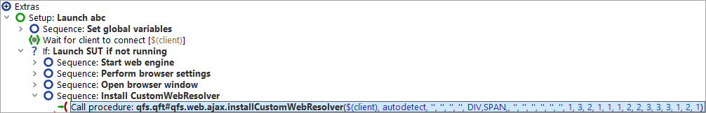

| Version 6.0.3 |
installCustomWebResolver
The mapping of HTML objects to QF-Test components is usually done via the procedure
qfs.web.ajax.installCustomWebResolver
from the standard library qfs.qft.
If you used the Quickstart Wizard from the »Extras« menu to create the
setup sequence for your web application, as recommended, you will find a call to this procedure
in the last 'Sequence' node.
|
|  | ||
|
| Figure 47.4: Aufruf des CustomWebResolvers im 'Setup' Knoten des Schnellstart-Assistenten | ||
Please find general information about component recognition in Recognition of web components and toolkits as well as in General configuration.
For information on QF-Test generic classes please refer to chapter 57.
An interesting feature of the generic classes is the class type. It is
used for the mapping of some GUI elements, e.g. Item:ListItem:
the main class is Item, the type ListItem.
Or for the button in a combo box: Button:ComboBoxButton.
And, this is the interesting bit, you can define you own types.
The example in Mapping of Tables and TreeTables uses this technique.
The sections
installCustomWebResolver - Parameters and
installCustomWebResolver - Parameter syntax
explain the parameters and the syntax of the procedure. Subsequently, you will find samples.
installCustomWebResolver - Parameters
The parameters are sorted by relevance. So, for example,
as component recognition is mostly based on determining QF-Test generic class names
from CSS classes or other attributes the parameters genericClasses
and attributesToGenericClasses come first.
|
|
|
||||||||||||||||||||||||||||||||||||||||||||||||||||||||||
installCustomWebResolver - Parameter syntax
If a parameter can take more than one entry you need to separate the entries by commas. The comma may be followed by a line break, however, not by a space.
The parameter syntax consists of the following expressions, sorted by relevance:
% denotes the following string as a regular expression.
%list.* refers to all values starting with list
Can be used with all parameters.
css-class=generic class
Maps an HTML element with the given css class to a QF-Test component of the given generic class.
css-button=Button
maps an HTML element with the css class css-button to a QF-Test
component of the generic class Button.
Can be used with the parameter genericClasses.
attribute=value=generic class
Maps an HTML element with the given attribute value to a QF-Test component with the given generic class.
role=datatable=Table assigns the generic QF-Test class Table
if the attribute role has the value datatable.
Can be used with the parameter attributesToGenericClasses.
TAG=generic class
Maps an HTML element with the given tag to a QF-Test component of the given generic class. Tags have to be written in capital letters.
LI=ListItem maps the HTML element with the tag li to a QF-Test
component with the generic class ListItem.
Can be used with the parameter tagsToGenericClasses.
class name or TAG
Suffix to entries in the parameter lists. The entry will only be evaluated when one of the ancestors of the GUI element has the given class name or the given tag. Please use capital letters for the tag.
Can be used with all parameters.
Sample for parameter tagsToGenericClasses:
LI=TableCell@::ancestor=TableRow
maps an HTML element with the tag li
to a QF-Test component of the generic class
TableCell if an ancestor has the class TableRow.
TAG
The preceding expression is only evaluated if
the tag of the HTML element matches.
Precedes the @:: operator.
Tags have to be written in capital letters.
Can be used with all parameters.
Sample for parameter genericClasses:
row=TableRow=SPAN
maps an HTML element with the class row to a QF-Test component
of the generic class TableRow
if the tag is SPAN.
Sample for parameter genericClasses:
row=TableRow=SPAN@::ancestor=Table
maps an HTML element with the css class row to a QF-Test TableRow
only if the tag is SPAN and if it has a some parent of the class
Table.
Sample for parameter interestingByAttributes:
myid=%.*=CONTAINER
maps HTML elements with the tag container only if they have the
attribute myid.
class name or TAG
Suffix to entries in the parameter lists. The entry will only be evaluated when the direct parent of the GUI element has the given class name or the given tag. Please use capital letters for the tag.
Can be used with all parameters.
Sample for parameter genericClasses:
css-data-row=TableRow@::parent=Table
maps the HTML element with the css class
css-data-row to a QF-Test component of the generic class
TableRow only if the direct parent has the class Table.
level>=class name or TAG
Suffix to entries in the parameter lists. The entry will only be evaluated when the parent of the given level of the GUI element has the given class name or the given tag. Please use capital letters for the tag.
The level relies on the component structure recorded by QF-Test or the generated DomNode,
so they could fail if the web-page or your resovler get changed.
You should consider using the normal @::ancestor operator in that
case or mapping a dedicated parent to a specific parent class which you can then use with
@::parent or @::ancestor. The sample in
Mapping of Tables and TreeTables shows this technique.
Can be used with all parameters.
Sample for parameter genericClasses:
css-button=Button:ComboBoxButton@::parent<3>=ComboBox
maps the button as of type ComboBoxButton if the parent at level three has the class
ComboBox.
level>=class name or TAG
Suffix to entries in the parameter lists. The entry will only be evaluated when a parent of the GUI element up to the given level has the given class name or the given tag. Please use capital letters for the tag.
Can be used with all parameters.
Sample for parameter genericClasses:
cbx=CheckBox:ListItemCheckBox@::ancestor<3>=List
maps the check box as of type ListItemCheckBox if an ancestor
within three parent levels has the class List.
(Count of levels as with @::parent.)
attribute=value
Can be used with the parameters ignoreByAttributes and
interestingByAttributes.
With the parameter ignoreByAttributes the entry has the effect
that no nodes will be created in the component hierarchy for HTML elements
with the given attribute value.
With the parameter interestingByAttributes the entry has the effect
that a component will be recorded for HTML elements where the attribute has the given value.
Sample for parameter ignoreByAttributes:
type=container ignores all nodes where the attribute type has the value
container when creating the parent hierarchy of a node.
Sample for parameter interestingByAttributes:
type=splitpane creates a node in the parent hierarchy if the
attribute type has the value splitpane.
In case you are interested:
@::ancestor=class internally uses the object method obj.getAncestorOfClass(class).
@::ancestor<level>=class internally uses the
object method obj.getAncestorOfClass(class, level)
@::parent= internally uses the object method obj.getParent()
@::parent<level>= internally uses the object method
obj.getNthParent(level)
For details of the methods please refer to Pseudo DOM API.
| Last update: 9/6/2022 Copyright © 1999-2022 Quality First Software GmbH |